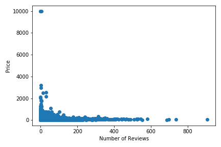
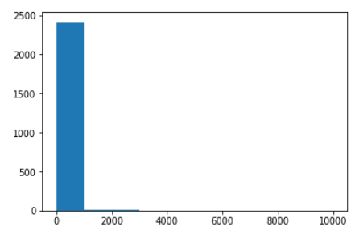
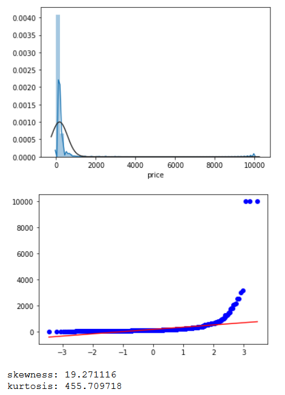
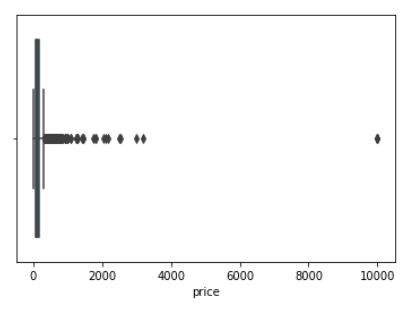
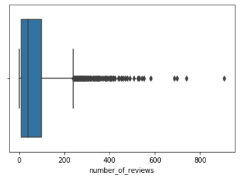
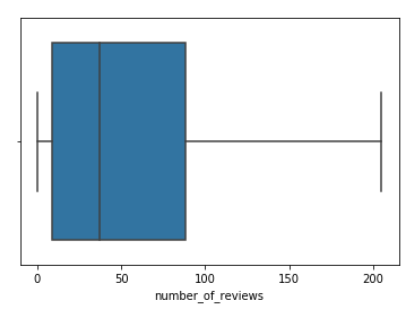
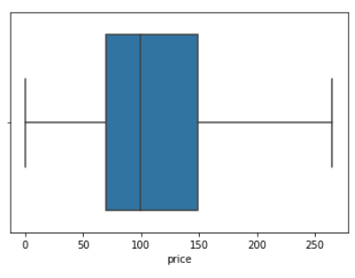
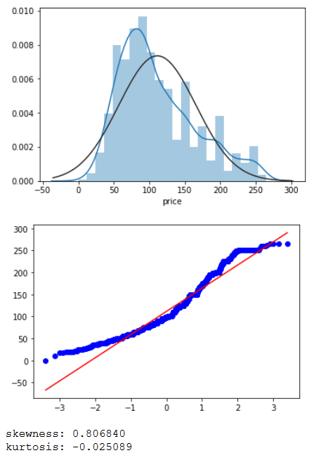
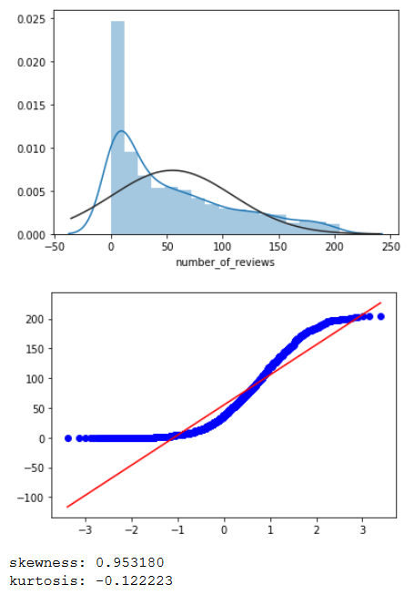

Down into the rabbit hole...

Ok so this correlation matrix heatmap is a little easier to read but price and number of reviews doesnt seem as correlated as we thought. Lets use sklearn to train our data with "X" representing number of reviews and "y" representing price. First lets build a scatter plot to see if a linear trend exists.
Mean Squared Error (MSE): 20974.37921957908
R-squared (R2 ): 0.010242904366014938
Model score comes back as 0.010242904366014938 -- yikes!
Is it the outliers?
So far our model is highly unreliable at predicting anything. Lets check the distribution of our data. A histogram of price shows our distribution is way off.
A kernal density plot and QQ plot show the same thing...
Our skewness is over 19. As a general rule of thumb: If skewness is less than -1 or greater than 1, the distribution is highly skewed. If skewness is between -1 and -0.5 or between 0.5 and 1, the distribution is moderately skewed. If skewness is between -0.5 and 0.5, the distribution is approximately symmetric.
Box plots on price and number of reviews will show where our outliers are.
 After Removing Outliers
Now our boxplots look much better.
 Our data is now only moderately skewed.
 Lets see how this effects our machine learning model. After running it through model test, fit, and predict we get:
- Mean Squared Error (MSE): 2655.3317856222598
- R-squared (R2 ): 0.02399340931092675
- Model Score: 0.02399340931092675
While our model score is improving (from 10% to approximately 24%) and our R-squared is within acceptable range, we're still far from a reliable model.